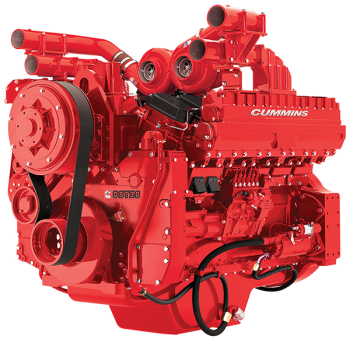
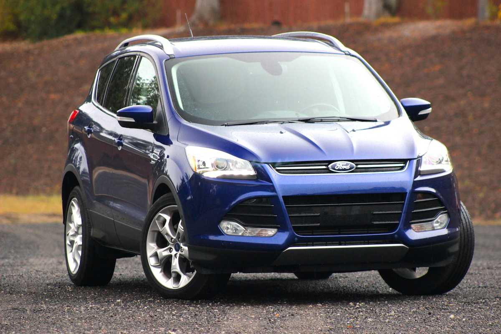
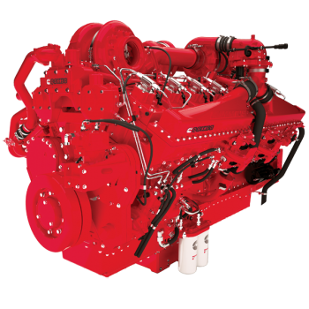
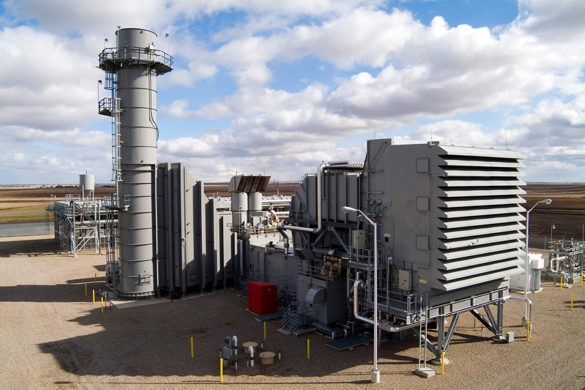
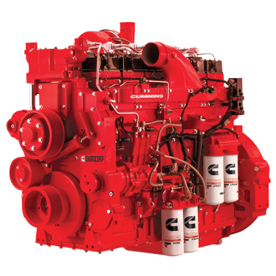
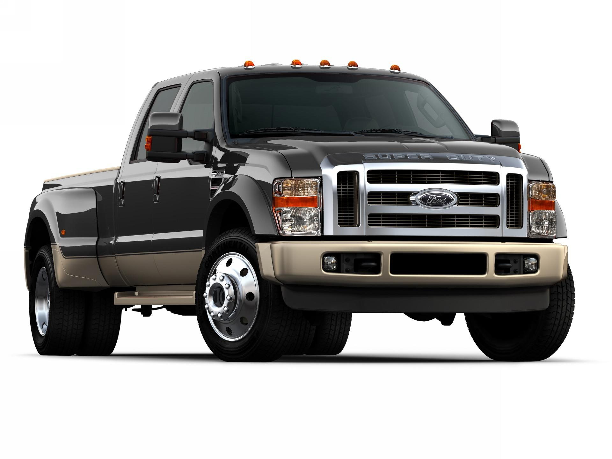
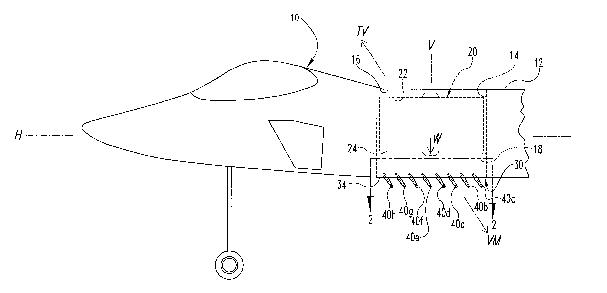

MICHAEL ULANOSKI
Louisville, Kentucky
U.S. phone 502-254-3451
E-mail: mike.ulanoski@att.net
www.linkedin.com/in/mikeulanoski
COMPETENCIES:
- NPI (New product design development & introduction) - I was the Lead on many successful new product rollout teams.
- Project Engineering/Product development.
- Six Sigma (Green Belt & Black Belt) - Cost Reduction & Quality Improvement using Six Sigma tools.
- Project Management - Lead projects from kick off to completion - On time and on budget on all my assignments.
- Read and interpret blueprints, technical drawings and schematics.
- Originate specifications, control documents, verification and validation plans, procedures, reports, or other documentation in support of design and development activities.
SKILLS:
- FMEA (Failure Mode and Effects Analysis)
- DVP&R (Design Verification, Plan and Report)
- GD&T (Geometric Dimensioning and Tolerancing)
- DMAIC (Define, Measure, Analyze, Implement, Control)
- PPAP (Product Part Approval Process)
- 8D Problem Solving
- FTA (Fault Tree Analysis)
- DFM/DFA (Design for Manufacturing/ Design for Assembly)
- Gage R&R (Gage Repeatability & Reproducibility)
- SPC (Statistical Process Control).
MY EXPERIENCE PROFILE:
FREELANCE ENGINEER 2012 - 2014, 2015 - Present
RANDSTAD ENGINEERING assigned to Cummins Position located in Columbus, Indiana 2014 - 2015
Title: Engineer IV

30L Cummins Engine
AEROTEK assigned to Ford Position located in Louisville, Kentucky 2012
Title: Quality Process Improvement Engineer

Ford Escape
LHP assigned to Cummins Position located in Columbus, Indiana 2011 - 2012
Title: Service Engineer

50L Cummins Engine
ADECCO assigned to GE Power – formerly GE Energy Position located in Louisville, Kentucky 2008 - 2009
Title: Project Manager

Turbine Inlet Filter House
CDI assigned to Cummins Position located in Seymour, Indiana 2007 - 2008
Title: Project Engineer

19L Cummins Engine
BARTECH assigned to Indiana University Cyclotron Facility (This facility no longer exsists) Position located in Bloomington, Indiana 2006 - 2007
Title: Engineer

Cyclotron
FORD MOTOR COMPANY Position located in Louisville, Kentucky 2000 - 2006
Title: Senior Chassis Design Engineer

Ford Super Duty Truck
MY PATENTS
Earned patents 6,105,901 & 6,318,668 for my invention of
a thrust vectoring mechanism design for the control of aircraft during
vertical takeoff and landing.

Image from my patent disclosure
MY PROFESSIONAL DEVELOPMENT
- Bachelor of Science in Mechanical Engineering (ABET accredited mechanical engineering degree program) from The University of Colorado at Denver.
- Currently Learning CSS, HTML, and Java Script coding through Treehouse & Code One Louisville.
- Six Sigma Green Belt & Six Sigma Black Belt while at Ford.
- ISO 9000 internal auditor.
- Currently Studying for CAPM (Certified Associate in Project Management).
- Engineer in Training (EIT) Ohio - State Board of Registration for Professional Engineers and Surveyors.